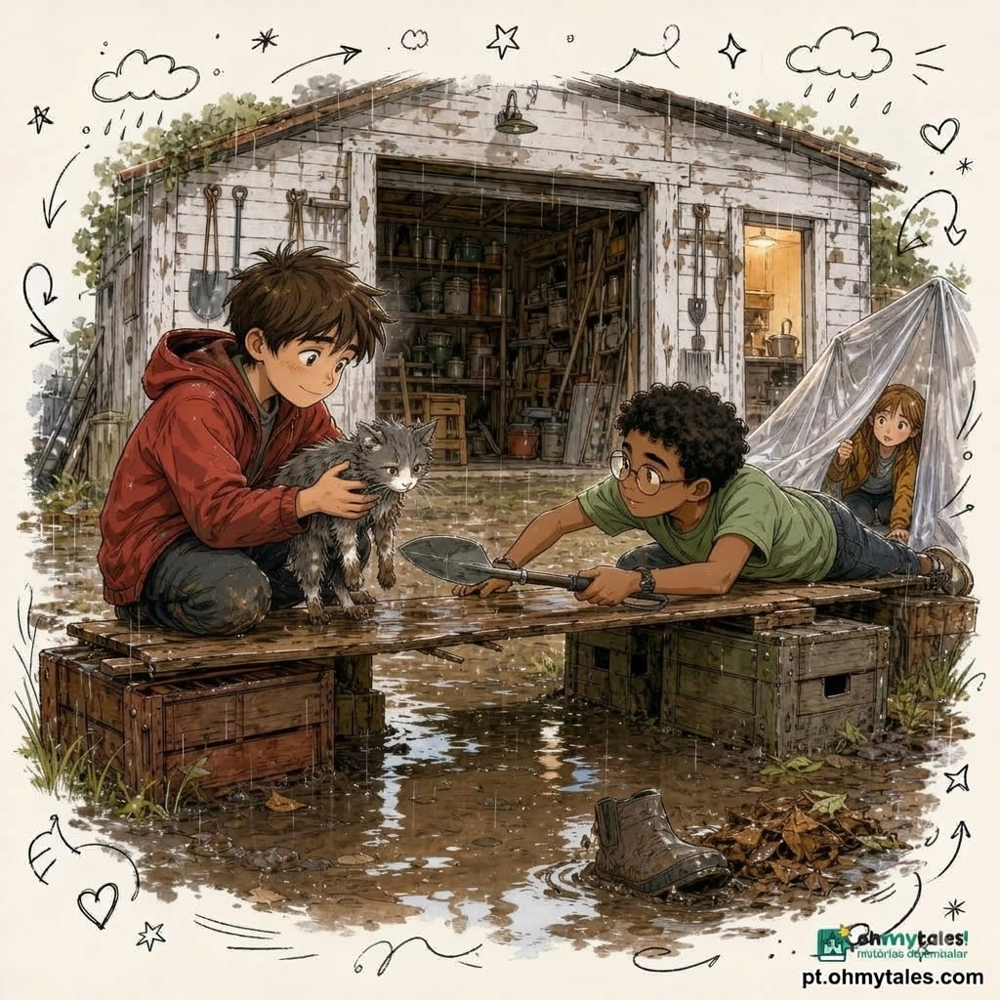

Resumo
Dois amigos, Tomás e Malik, transformam um quintal enlameado numa aventura para recuperar uma caixa de jogos e usam criatividade e cooperação para enfrentar obstáculos inesperados.
Dois amigos, Tomás e Malik, transformam um quintal enlameado numa aventura para recuperar uma caixa de jogos e usam criatividade e cooperação para enfrentar obstáculos inesperados.

No sábado de manhã, a chuva tinha parado, mas o quintal da avó Leonor parecia uma sopa de terra castanha.
Tomás, que tinha doze anos e uma colecção de ideias perigosamente boas, espreitou pela janela da cozinha.
— A zona lamacenta aumentou — anunciou ele, com ar grave.
Ao seu lado, Malik ajustou os óculos e observou o terreno.
— Não aumentou. A água escorreu da horta. É física. — A física tem péssimo gosto para decoração. A avó Leonor riu enquanto cortava pão.
— Meninos, podem ir buscar a caixa de jogos à garagem? Está na prateleira de trás. Mas nada de atravessar o lamaçal. Ontem quase perdi uma bota ali.
Tomás fez uma pequena vénia.
— Prometo que os nossos pés ficarão limpos como pratos. Malik levantou uma sobrancelha.
— Tu prometeste isso antes da festa da escola.
— E fiquei com os pés limpos.
— Porque perdeste os ténis no caminho.
Os dois saíram para o quintal. Entre a cozinha e a garagem havia um enorme charco de lama, cheio de folhas, pedrinhas e uma pá esquecida. No meio, uma velha bota da avó boiava de lado, como um barco cansado.
A garagem ficava a poucos metros. Mas, naquele momento, parecia estar do outro lado de um pântano misterioso.
Tomás apontou para a lama.
— Não vamos por ali.
— Essa era exactamente a missão — disse Malik.
Tomás sorriu.
— Então precisamos de uma expedição.
Atrás do tanque da roupa, encontraram três tábuas velhas, duas caixas de plástico e uma mangueira enrolada.
Tomás já puxava uma tábua quando Malik o travou.
— Espera. Primeiro pensamos. Depois fazemos.
— Pensar é óptimo. Mas fazer tem mais barulho.
Malik mediu a distância com os olhos. Não era muito larga, mas a lama parecia funda. E escorregadia. E muito interessada em engolir sapatos.
— As tábuas podem servir de ponte — disse Malik. — Mas têm de ficar apoiadas em alguma coisa.
Usaram as caixas como bases. Tomás colocou uma tábua e saltou em cima dela.
A tábua rodou.
— Uau! — gritou ele, agitando os braços.
Malik agarrou-lhe a camisola antes que ele aterrasse no charco.
— Primeiro pensamos — repetiu Malik, sem soltar a camisola.
Tomás recuperou o equilíbrio.
— Muito obrigado. A minha dignidade também agradece.
Puseram pedras debaixo das caixas e apertaram a mangueira à volta das tábuas, como se fosse uma corda de segurança. A ponte ficou torta, curta e pouco elegante.
Mas ficou firme.
— Parece um jacaré de madeira — disse Tomás.
— Um jacaré útil.
— Os melhores tipos de jacaré.
Tomás atravessou primeiro, devagar. Um pé. Outro pé. Braços abertos. Chegou à ponta e fez uma reverência.
Malik foi atrás, com passos seguros. Não gostava de saltar sem saber onde ia cair. Tomás adorava. Ainda assim, cada um tinha o seu jeito, e os dois sabiam que isso ajudava.
Quando alcançaram a garagem, bateram as mãos numa vitória silenciosa.
— Viste? — disse Tomás. — A aventura respeita quem se prepara.
— Isso saiu da tua boca?
— Anota a data.
A garagem cheirava a madeira, tinta e bolas de futebol antigas. Havia bicicletas encostadas à parede, vasos vazios, ferramentas penduradas e uma montanha de caixas que pareciam ter crescido durante a noite.
A caixa de jogos estava na prateleira de trás.
Só que a prateleira de trás ficava atrás de uma bicicleta, de uma escada dobrável e de um carrinho de mão.
Tomás pousou as mãos na cintura.
— O dragão protegeu o tesouro.
— É só uma bicicleta — disse Malik.
— Um dragão com rodas.
Empurraram a bicicleta com cuidado. Depois afastaram a escada. O carrinho de mão, porém, estava preso num canto.
— Não forces — disse Malik. — Pode cair tudo.
Tomás respirou fundo. Era bom em correr, inventar e falar depressa. Esperar era mais difícil. Mas olhou para o amigo e assentiu.
Examinaram o carrinho. Uma corda estava presa numa roda. Malik desatou o nó. Tomás segurou o cabo para ele não tombar.
Por fim, a prateleira apareceu.
Lá estava a caixa de jogos: grande, azul, com estrelas amarelas pintadas na tampa. Tinha sido do pai de Tomás quando era pequeno. Dentro havia cartas, dados, peças de madeira e um tabuleiro dobrável, já um pouco gasto nos cantos.
— Missão cumprida? — perguntou Tomás.
Malik apontou para a janela da garagem.
A chuva voltara. Primeiro em pingos tímidos. Depois numa cortina apressada.
A ponte de tábuas começou a brilhar de água. — Missão quase cumprida — corrigiu Malik.
— Se corrermos, escorregamos — disse Malik.
— Se ficarmos, viramos mobília da garagem.
Tomás abriu a caixa de jogos. Debaixo do tabuleiro havia dois guarda-chuvas pequenos: um amarelo, um vermelho. A avó Leonor devia tê-los guardado ali havia anos.
— Temos um plano! — disse ele.
— Temos dois guarda-chuvas. Não é a mesma coisa.
Mas Malik já olhava para a mangueira enrolada e para uma lona transparente que cobria sacos de terra.
Em poucos minutos, criaram um tecto baixo entre a garagem e o início da ponte. Prenderam a lona à parede com molas da roupa e usaram a mangueira como apoio.
Não era um túnel perfeito. Pingava em três sítios. Noutro, fazia um barulho de tambor sempre que o vento soprava.
— É um túnel musical — declarou Tomás.
Atravessaram debaixo da lona, levando a caixa de jogos entre os dois. Quando chegaram à ponte, a chuva abrandou.
Tomás quis avançar depressa.
— Calma — disse Malik. — A madeira está mais escorregadia.
— Eu sei.
Dessa vez, Tomás não brincou. Segurou a caixa com firmeza e fez cada passo com atenção. Malik foi atrás, pronto para apoiar o amigo.
No meio da ponte, ouviram um miado.
Vinha da zona lamacenta.
Perto da bota da avó, um gatinho cinzento tentava sair de um monte de folhas. As patas estavam sujas. O pelo parecia uma nuvem molhada.
— Oh, não — murmurou Tomás.
— Ele não consegue passar — disse Malik.
Tomás olhou para a caixa de jogos. Depois para o gatinho. Depois para a lama.
— Não podemos atravessar o charco — lembrou Malik.
— Não vamos atravessar. Vamos pensar.
O gatinho miou outra vez. Era um miado pequeno, mas teimoso.
Tomás tirou o guarda-chuva vermelho da caixa.
— Se eu esticar isto…
— Não chega.
Malik pegou na pá esquecida e amarrou-lhe a mangueira. Depois abriu o guarda-chuva e prendeu o cabo ao topo da pá.
— Uma espécie de colher gigante — explicou.
Tomás arregalou os olhos.
— És um génio.
— Não digas isso muito alto. Posso começar a acreditar.
Malik deitou-se de barriga para baixo na ponta segura da ponte. Tomás segurou-lhe os tornozelos. Com muito cuidado, Malik estendeu a pá para o gatinho.
— Vá lá, pequenino — disse ele. — Sobe aqui.
O gato cheirou o guarda-chuva. Espirrou. Depois colocou uma pata, depois outra. Escorregou um pouco, mas Tomás apertou os pés de Malik, e Malik levantou a pá devagar.
O gatinho chegou à ponte coberto de lama.
Tomás pegou nele ao colo. O animal tremeu durante dois segundos. Depois começou a ronronar, como um motor minúsculo.
— Acho que ele gostou de ti — disse Malik.
— Ele reconhece um aventureiro.
— Ele reconhece uma fonte de calor.
Tomás enrolou o gato no guarda-chuva amarelo. Reparou que tinha uma mancha branca no focinho, como se alguém lhe tivesse desenhado uma meia-lua.
— Vamos chamar-lhe Nuvem.
— Porque é cinzento?
— Porque é macio. E porque apareceu numa tempestade.
Atravessaram o resto da ponte com mais cuidado ainda. Não só pela caixa de jogos. Agora havia também Nuvem, o passageiro mais importante da expedição.
Quando chegaram ao outro lado, a avó Leonor apareceu à porta, com uma toalha nas mãos.
— Eu sabia que vocês estavam a inventar alguma coisa — disse ela. Então viu o gatinho e levou a mão ao peito. — Ora essa… quem és tu?
Nuvem respondeu com um espirro.
Na cozinha, a avó limpou as patas de Nuvem numa bacia morna. Tomás e Malik secaram a caixa de jogos com panos de prato.
— A ponte foi segura? — perguntou a avó.
— Segura o suficiente — respondeu Malik.
— E melhorámos a parte que não era segura — acrescentou Tomás.
A avó observou os dois. Não ralhou. Apenas sorriu daquele jeito que dizia: “Ainda bem que voltaram inteiros.”
— A aventura é bonita — disse ela. — Mas fica ainda melhor quando se pensa nos outros.
Tomás fez festas na cabeça de Nuvem.
— Até nos outros que têm bigodes e não sabem usar pontes.
Depois do almoço, a chuva parou de vez. Pela janela, o sol apareceu e fez a lama brilhar como chocolate derretido. A avó colocou uma tigela de água para Nuvem e telefonou à vizinha para saber se alguém tinha perdido um gatinho.
Enquanto esperavam, os rapazes abriram a caixa de jogos na mesa.
Havia um tabuleiro de exploração, com caminhos, florestas, rios e montanhas. Havia peões de várias cores. Tomás escolheu o vermelho. Malik escolheu o verde.
— O vermelho é mais rápido — disse Tomás.
— Só nas tuas histórias.
— Nas minhas histórias, é muito importante.
Nuvem sentou-se em cima do peão azul.
— E ele? — perguntou Malik.
— É o explorador das nuvens.
Jogaram durante uma hora. Tomás inventava vozes para os peões. Malik encontrava atalhos que ninguém tinha visto. Quando um dos dados caiu ao chão, Nuvem perseguiu-o como se fosse um besouro muito suspeito.
Pouco antes do jantar, a vizinha apareceu. O gatinho era dela. Chamava-se Fubá e tinha escapado quando a janela ficou aberta.
Tomás ficou triste por um instante.
— Ele vai voltar para casa — disse Malik. — Isso é bom.
Tomás assentiu. Pegou em Fubá com cuidado e entregou-o à vizinha.
— Adeus, explorador das nuvens.
Fubá respondeu com um miado e deixou uma pegada minúscula na manga dele.
Quando a porta se fechou, o quintal já estava dourado pelo fim da tarde. A zona lamacenta continuava lá, enorme e brilhante. Mas agora tinha uma ponte por cima e uma bota resgatada ao lado.
Tomás fechou o tabuleiro. Malik guardou os dados e as cartas. Juntos, pousaram as peças dentro da caixa azul.
— Até à próxima missão? — perguntou Tomás.
— Depois de verificarmos o tempo, o caminho e a existência de gatos presos — respondeu Malik.
Tomás sorriu.
— Combinado.
A tampa desceu devagar. Fez um clique suave.
E o baú de jogos ficou fechado, cheio de mapas, dados, segredos e a promessa de outra aventura bem perto de casa.
Essa hidtória foi retira do site Oh my tales! histórias para embalar..